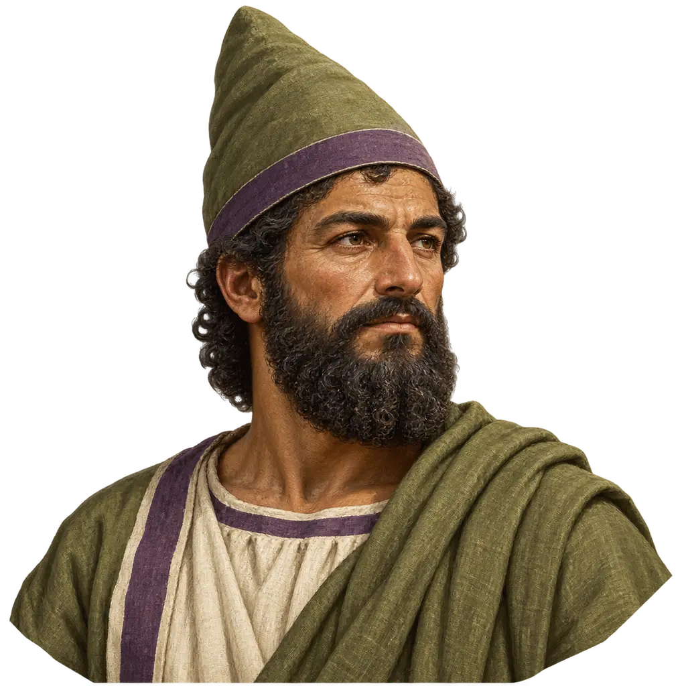
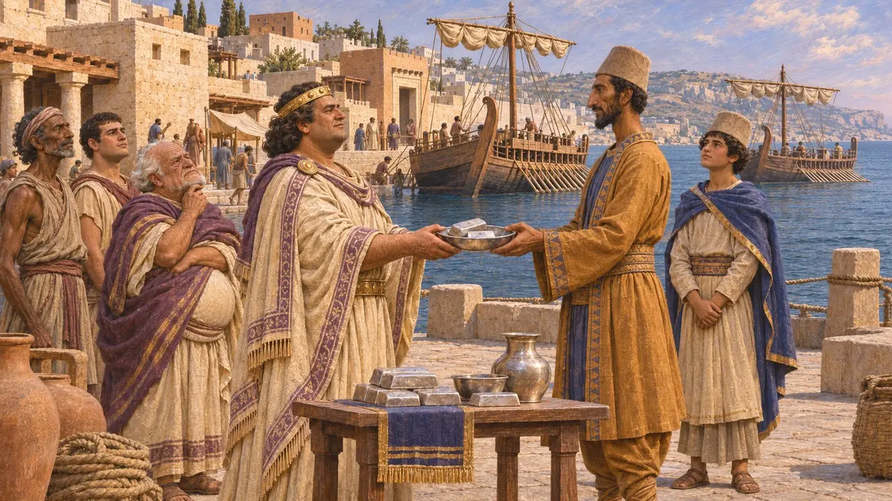
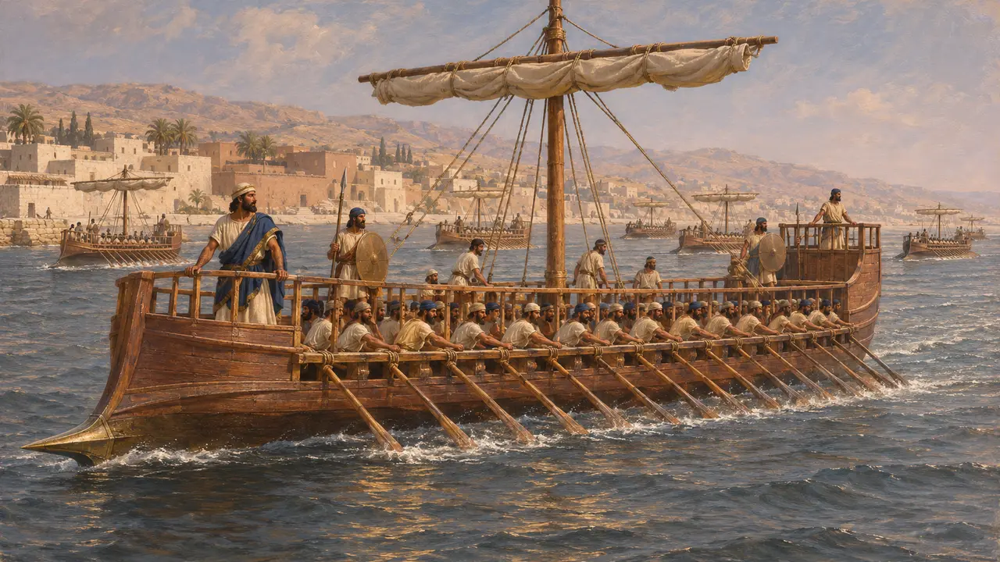
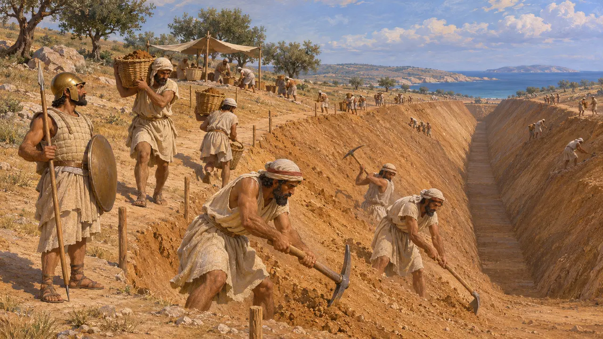
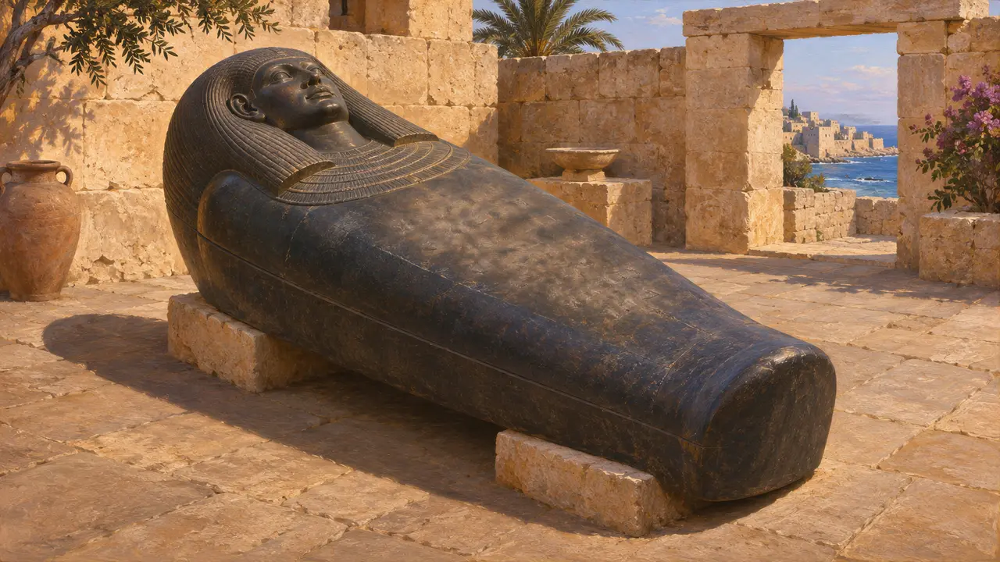
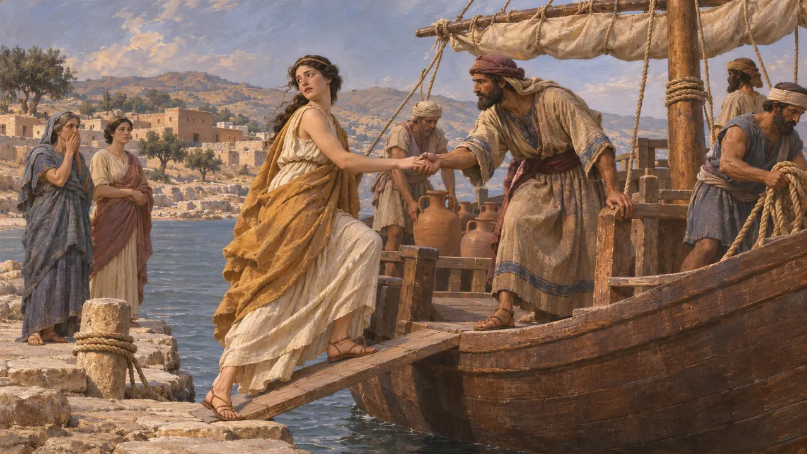
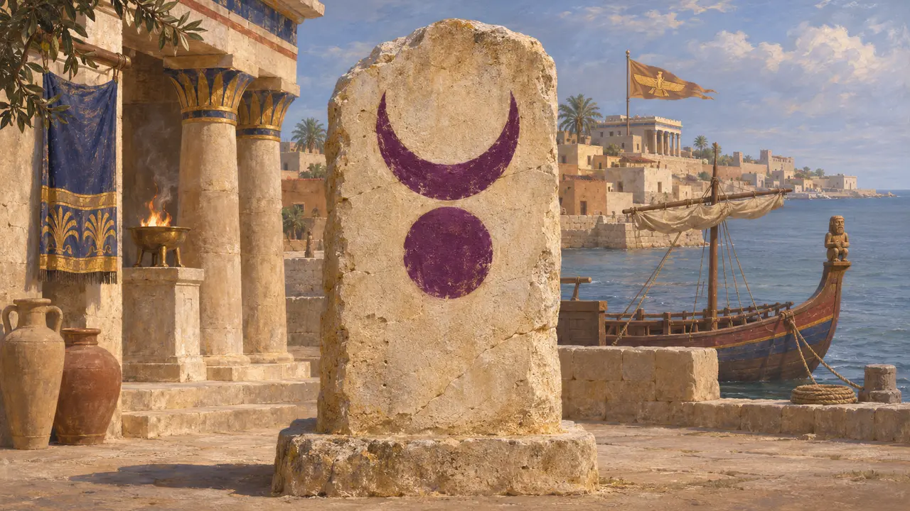

Os Fenícios
Cidades-Estado marítimas da costa do Levante sob domínio persa, c. 539-479 AEC
No jogo: Nível 2: O Portador da Lança, Nível 5: A Carta, Nível 7: Sardes em Chamas
Os fenícios viviam nas cidades-Estado costeiras do Levante, sobretudo Sídon, Tiro, Biblos e Arwad. Sob o domínio persa, mantiveram seus próprios reis e forneceram o núcleo da marinha do Rei, desde a invasão do Egito por Cambises em 525 AEC até a guerra de Xerxes contra a Grécia em 480 AEC. Heródoto considera seus navios os melhores da frota persa.
No jogo: O jogo faz dos fenícios parceiros comerciais e lhes dá fuzileiros, os melhores navios do Rei e o Estaleiro Fenício. Heródoto diz que cada navio levava seus próprios combatentes nativos, ao lado de trinta persas, medos ou sakas.

Cidades que passaram para o lado persa
Relato antigoHeródoto afirma que os fenícios se entregaram aos persas por vontade própria, provavelmente pouco depois de Ciro tomar a Babilônia em 539 AEC. Suas cidades mantinham os próprios reis e pagavam tributo. Heródoto os coloca no quinto distrito tributário, com a Síria Palestina e Chipre, taxado em 350 talentos de prata. Quando Cambises planejou atacar Cartago, recusaram-se a navegar contra a própria colônia, e ele desistiu, pois sua frota dependia deles.
Herodotus 3.19; 3.91

A espinha dorsal da frota real
Relato antigoOs navios fenícios formaram o núcleo da frota de Cambises contra o Egito em 525 AEC. Em 494 AEC, lideraram a frota que derrotou os rebeldes jônios ao largo de Lade, onde Heródoto os chama de as tripulações mais aguerridas do Rei. Em Salamina, em 480 AEC, sofreram pesadas perdas, e quando alguns capitães fenícios culparam os jônios, Xerxes mandou decapitá-los, segundo Heródoto. Em 479 AEC, os persas dispensaram a esquadra fenícia antes da batalha de Mícale.
Herodotus 3.19; 6.6; 8.90; 9.96

Construtores e marinheiros da guerra de Xerxes
Relato antigoNo canal de Atos, diz Heródoto, apenas os fenícios escavaram seu trecho mais largo na parte superior, para que as laterais não desabassem. Eles fizeram os cabos de linho de uma das pontes do Helesponto, e os egípcios fizeram os de papiro. Junto com os sírios da Palestina, enviaram 300 trirremes em 480 AEC, e os sidônios venceram uma regata realizada para Xerxes em Abidos. Suas tripulações usavam elmos próximos do estilo grego e couraças de linho, e levavam escudos sem borda e dardos.
Herodotus 7.23; 7.34; 7.44; 7.89

Um rei de Sídon e o Senhor dos Reis
DisputadoO sarcófago de pedra de Eshmunazar II, rei de Sídon, traz uma inscrição fenícia dizendo que o Senhor dos Reis deu a Sídon as cidades costeiras de Dor e Jope em troca de seus serviços. A maioria dos estudiosos entende que o Senhor dos Reis é o Rei persa. A data é discutida: muitos hoje a situam nas décadas após 479 AEC, enquanto outros propõem uma data anterior. De todo modo, ela mostra um rei fenício apresentando o favor persa como uma dádiva à sua cidade.
Eshmunazar II sarcophagus inscription (KAI 14); J. Elayi, The History of Phoenicia, 2018

Quem começou a contenda
Lenda posteriorHeródoto abre sua obra com uma história que atribui a persas eruditos. Nela, mercadores fenícios em Argos raptaram Io, a filha do rei, dando início a uma série de raptos que terminou em Troia e, segundo esse relato, na hostilidade entre a Ásia e a Grécia. Ele acrescenta que os fenícios contam a história de outro modo, dizendo que Io partiu com eles de livre vontade. Trata-se de um conto ambientado em tempos míticos, não de história.
Herodotus 1.1-1.5

O emblema ao lado do nome
DisputadoO jogo dá à Fenícia um crescente sobre um disco, sinal presente em estelas e selos fenícios dos séculos VIII a V AEC, em púrpura de Tiro. A galera das moedas de Sidon e as moedas de Tiro não são usadas: elas surgem só depois de cerca de 450 AEC. Heródoto diz que os navios fenícios levavam em suas proas pequenas figuras de deuses, os pataikoi.
G. Markoe, Phoenicians, 2000; Herodotus 3.37
Fontes
- Herodotus, Histories
- J. Elayi, The History of Phoenicia, 2018
- P. Briant, From Cyrus to Alexander, 2002
- Eshmunazar II sarcophagus inscription (KAI 14)